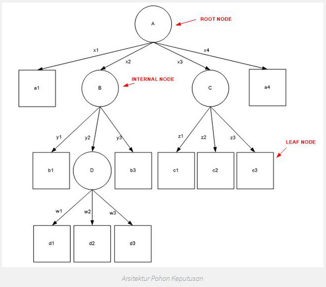
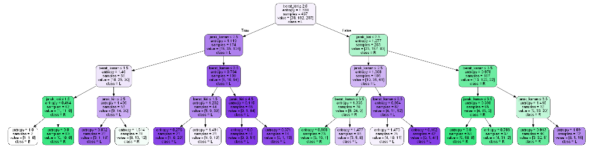

Pohon Keputusan / Decision Tree¶
Pengertian Pohon Keputusan / Decision Tree¶
Decision tree adalah salah satu metode klasifikasi yang paling populer, karena mudah untuk diinterpretasi oleh manusia. Decision tree adalah model prediksi menggunakan struktur pohon atau struktur berhirarki. Konsep dari decision tree adalah mengubah data menjadi decision tree dan aturan-aturan keputusan. Manfaat utama dari penggunaan decision tree adalah kemampuannya untuk mem-break down proses pengambilan keputusan yang kompleks menjadi lebih simple, sehingga pengambil keputusan akan lebih menginterpretasikan solusi dari permasalahan.
Pohon keputusan adalah struktur seperti bagan alur di mana setiap simpul internal mewakili "tes" pada atribut (misalnya whether a coin flip comes up heads or tails), masing-masing cabang mewakili hasil pengujian, dan setiap simpul daun mewakili label kelas (keputusan diambil setelah menghitung semua atribut). Jalur dari root ke daun mewakili aturan klasifikasi.
Dalam analisis keputusan, pohon keputusan dan diagram pengaruh yang terkait erat digunakan sebagai alat pendukung keputusan visual dan analitis, di mana nilai yang diharapkan (atau utilitas yang diharapkan) dari alternatif yang bersaing dihitung.
Pohon keputusan terdiri dari tiga jenis nodes :
- Node keputusan - biasanya diwakili oleh kuadrat
- Peluang node - biasanya diwakili oleh lingkaran
- Node akhir - biasanya diwakili oleh segitiga
Pohon keputusan biasanya digunakan dalam riset operasi dan manajemen operasi. Jika, dalam praktiknya, keputusan harus diambil secara online tanpa penarikan kembali di bawah pengetahuan yang tidak lengkap, pohon keputusan harus diparalelkan dengan model probabilitas sebagai model pilihan terbaik atau algoritma model seleksi online. Penggunaan lain dari pohon keputusan adalah sebagai alat deskriptif untuk menghitung probabilitas bersyarat.
Pengertian Algoritma ID3¶
Algoritma ID3 merupakan algoritma yang dipergunakan untuk membangun sebuah decision tree atau pohon keputusan. Algoritma ini ditemukan oleh J. Ross Quinlan (1979), dengan memanfaatkan Teori Informasi atau Information Theory milik Shanon. ID3 sendiri merupakan singkatan dari Iterative Dichotomiser 3. Decision tree menggunakan struktur hierarki untuk pembelajaran supervised. Proses dari decision tree dimulai dari root node hingga leaf node yang dilakukan secara rekursif. Di mana setiap percabangan menyatakan suatu kondisi yang harus dipenuhi dan pada setiap ujung pohon menyatakan kelas dari suatu data.
Proses dalam decision tree yaitu mengubah bentuk data (tabel) menjadi model pohon (tree) kemudian mengubah model pohon tersebut menjadi aturan (rule). Dengan pendekatan ini, salah satu kelemahan algoritma dari decision tree, adalah faktor skalabilitas dimana algoritma tersebut hanya dapat digunakan untuk menangani sampel-sampel yang dapat disimpan secara keseluruhan dan pada waktu yang bersamaan di memori.
Kelebihan & Kekurangan Pohon Keputusan / Decision Tree¶
Metode pohon keputusan mempunyai beberapa kelebihan, diantaranya sebagai berikut :
- Daerah pengambilan keputusan yang sebelumnya kompleks dan sangat global, dapat diubah menjadi simple dan spesifik.
- Eliminasi perhitungan-perhitungan yang tidak diperlukan, karena ketika menggunakan metode pohon keputusan maka contoh diuji hanya berdasarkan kriteria atau kelas-kelas tertentu.
- Fleksibel untuk memilih fitur dari internal node yang berbeda, fitur yang terpilih akan membedakan suatu kriteria dibandingkan kriteria yang lain dalam node yang sama.
- Metode pohon keputusan dapat menghindari munculnya permasalahan ini dengan menggunakan kriteria yang jumlahnya lebih sedikit pada setiap node internal tanpa banyak mengurangi kualitas keputusan yang dihasilkan.
Beberapa kekurangan dari pohon keputusan, diantaranya sebagai berikut :
- Terjadi overlap terutama ketika kelas-kelas dan kriteria yang digunakan jumlahnya sangat banyak. Hal tersebut juga dapat menyebabkan meningkatnya waktu pengambilan keputusan dan jumlah memori yang diperlukan.
- Pengakumulasian jumlah eror dari setiap tingkat dalam sebuah pohon keputusan yang besar.
- Kesulitan dalam mendesain pohon keputusan yang optimal
- Hasil kualitas keputusan yang didapatkan dari metode pohon keputusan sangat tergantung pada bagaimana pohon tersebut didesain.
Arsitektur Pohon Keputusan / Decision Tree¶
Arsitektur pohon keputusan dibuat menyerupai bentuk pohon, dimana pada umumnya sebuah pohon terdapat akar (root), cabang dan daun (leaf). Pada pohon keputusan juga terdiri dari tiga bagian sebagai berikut :
a. Root node atau node akar merupakan node yang terletak paling atas dari suatu pohon.
b. Internal Node ini merupakan node percabangan, dimana pada node ini hanya terdapat satu input dan mempunyai minimal dua output.
c. Leaf Node ini merupakan node akhir, hanya memiliki satu input, dan tidak memiliki output. Pada pohon keputusan setiap leaf node menandai label kelas.
Pada pohon keputusan di setiap percabangan menyatakan kondisi yang harus dipenuhi dan tiap ujung pohon menyatakan nilai kelas data. Gambar berikut merupakan bentuk arsitektur pohon keputusan.

Langkah-Langkah Konstruksi Pohon Keputusan dengan Algoritma ID3¶
Langkah-langkah dalam konstruksi pohon keputusan adalah sebagai berikut :
Langkah 1 : Pohon dimulai dengan sebuah simpul yang mereperesentasikan sampel data pelatihan yaitu dengan membuat simpul akar.
Langkah 2 : Jika semua sampel berada dalam kelas yang sama, maka simpul ini menjadi daun dan dilabeli menjadi kelas. Jika tidak, information gain akan digunakan untuk memilih atribut terbaik dalam memisahkan data sampel menjadi kelas-kelas individu.
Langkah 3 : Cabang akan dibuat untuk setiap nilai pada atribut dan data sampel akan dipartisi lagi.
Langkah 4 : Algoritma ini menggunakan proses rekursif untuk membentuk pohon keputusan pada setiap data partisi. Jika sebuah atribut sduah digunakan disebuah simpul, maka atribut ini tidak akan digunakan lagi di simpul anak-anaknya.
Langkah 5 : Proses ini berhenti jika dicapai kondisi seperti berikut :
– Semua sampel pada simpul berada di dalam satu kelas
– Tidak ada atribut lainnya yang dapat digunakan untuk mempartisi sampel lebih lanjut. Dalam hal ini akan diterapkan suara terbanyak. Ini berarti mengubah sebuah simpul menjadi daun dan melabelinya dnegan kelas pada suara terbanyak.
Entropy & Information Gain¶
Algoritma pada metode ini menggunakan konsep dari entropi. Konsep Entropi yang digunakan untuk mengukur “seberapa informatifnya” sebuah node (yang biasanya disebut seberapa baiknya).
Entropi(S) = 0, jika semua contoh pada S berada dalam kelas yang sama. Entroiy(S) = 1, jika jumlah contoh positif dan jumlah contoh negatif dalam S adalah sama. 0 < Entropi(S) < 1, jika jumlah contoh positif dan negatif dalam S tidak sama. $$ \begin{equation} (S)=\sum_{j=1}^{k}-p_{j} \log {2} p{j} \end{equation} $$ Keterangan : • S adalah himpunan (dataset) kasus • k adalah banyaknya partisi S • pj adalah probabilitas yang di dapat dari Sum(Ya) dibagi Total Kasus.
Setelah mendapat nilai entropi, pemilihan atribut dilakukan dengan nilai information gain terbesar. $$ \begin{equation} \operatorname{Gain}(A)=E n t r o p i(S)-\sum_{i=1}^{k} \frac{\left|S_{i}\right|}{|S|} \times E n t r o p i\left(S_{i}\right) \end{equation} $$ Keterangan : S = ruang (data) sample yang digunakan untuk training. A = atribut. |Si| = jumlah sample untuk nilai V. |S| = jumlah seluruh sample data. Entropi(Si) = entropy untuk sample-sample yang memiliki nilai i
Implementasi Pohon Keputusan¶
Import pandas, DecisionTreeClassifier, train_test_split, metrics, accuracy_score, seaborn, export_graphviz, StringIO, Image, export_graphviz, pydotplus, dan numpy ke dalam python.
import pandas as pd
from sklearn.tree import DecisionTreeClassifier
from sklearn.model_selection import train_test_split
from sklearn import metrics
from sklearn.metrics import accuracy_score
import seaborn as sns
from sklearn.tree import export_graphviz
from sklearn.externals.six import StringIO
from IPython.display import Image
from sklearn.tree import export_graphviz
import pydotplus
import numpy as npMasukkan data .csv dengan membuat variabel data
data = pd.read_csv('balance_scale.csv')
data.head()Output :

Masukkan variabel untuk mengetahui data dan info
data.info()<class 'pandas.core.frame.DataFrame'>
RangeIndex: 625 entries, 0 to 624
Data columns (total 5 columns):
berat_kiri 625 non-null int64
jarak_kiri 625 non-null int64
berat_kanan 625 non-null int64
jarak_kanan 625 non-null int64
seimbang 625 non-null object
dtypes: int64(4), object(1)
memory usage: 24.5+ KBzero_not_accepted = ['berat_kiri','jarak_kiri','berat_kanan','jarak_kanan']
# for col in zero_not_accepted:
# for i in data[col]:
# if i==0:
# colSum = sum(data[col])
# meanCol=colSum/len(data[col])
# data[col]=meanCol
for col in zero_not_accepted:
data[col]= data[col].replace(0,np.NaN)
mean = int(data[col].mean(skipna=True))
data[col] = data[col].replace(np.NaN,mean)X = data.iloc[:,0:3]
y = data.iloc[:,3]
#Pregnancies Glucose BloodPressure SkinThickness Insulin BMI DiabetesPedigreeFunction Age
#build model & train data
X = data[['berat_kiri','jarak_kiri','berat_kanan','jarak_kanan']]
y = data['seimbang']
#split data
X_train, X_test, y_train, y_test = train_test_split(X, y, test_size = 0.3, random_state=0)clf = DecisionTreeClassifier(criterion="entropy", max_depth=4)
clf = clf.fit(X_train,y_train)
y_pred = clf.predict(X_test)feature_cols = ['berat_kiri','jarak_kiri','berat_kanan','jarak_kanan']
dot_data = StringIO()
export_graphviz(clf, out_file=dot_data,
filled=True, rounded=True,
special_characters=True,feature_names = feature_cols,class_names=['B','R','L'])
graph = pydotplus.graph_from_dot_data(dot_data.getvalue())
graph.write_png('keseimbangan.png')
Image(graph.create_png())Output :
